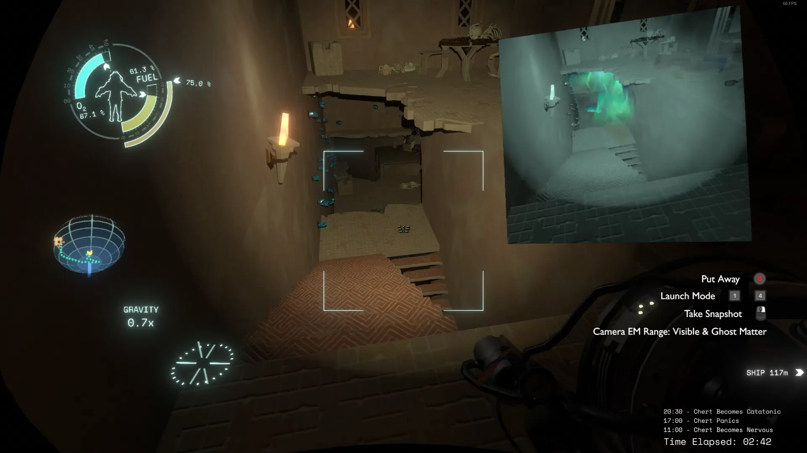
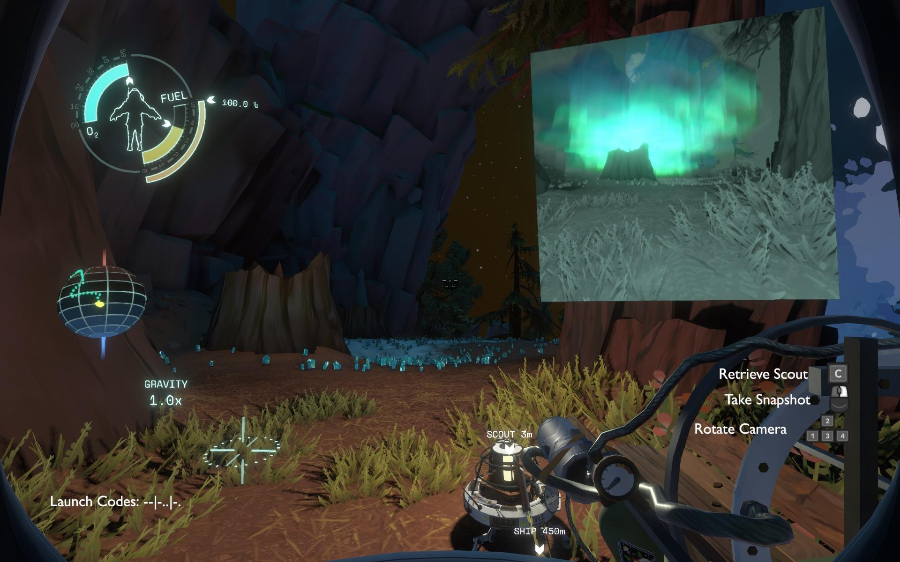
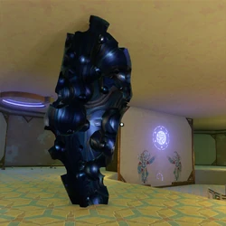
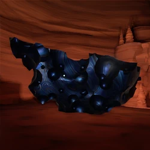
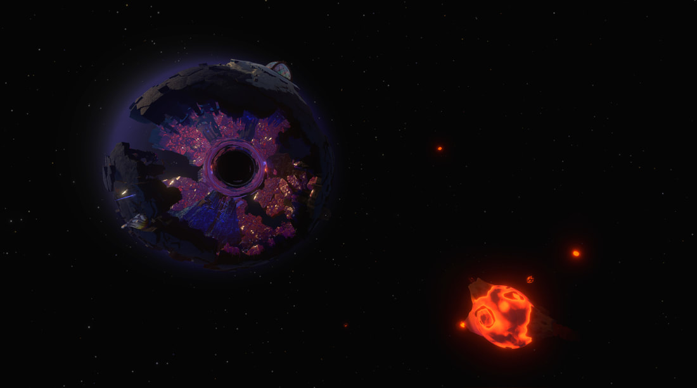
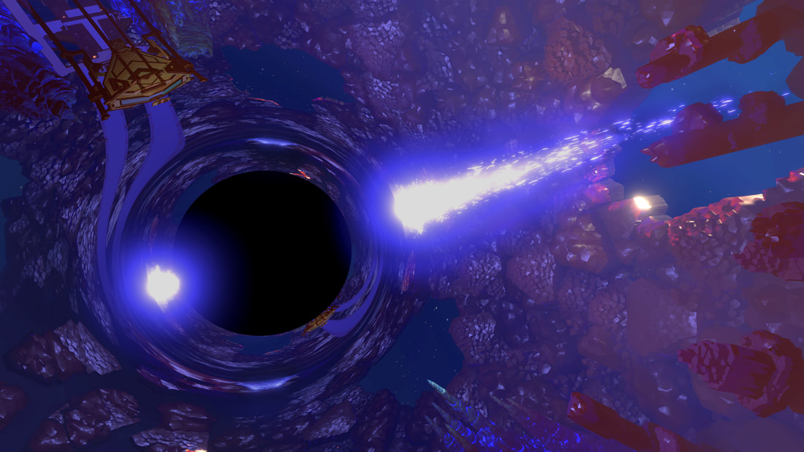
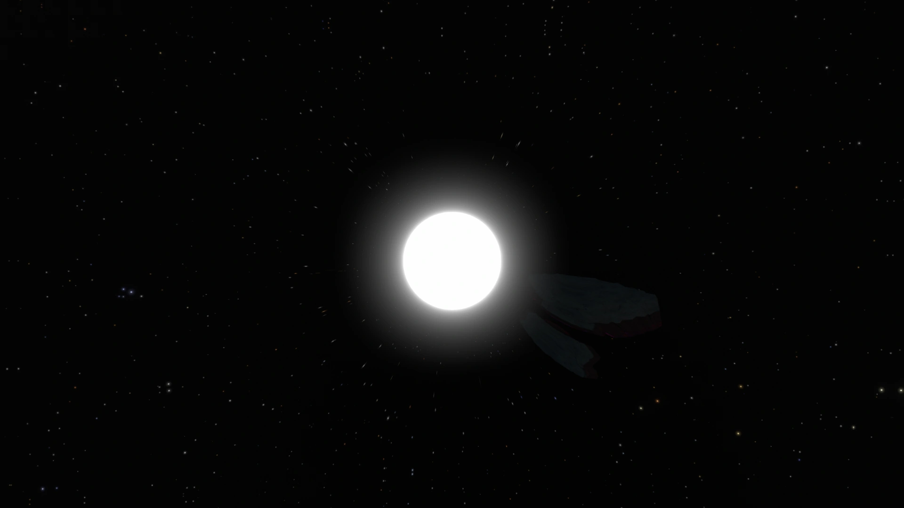
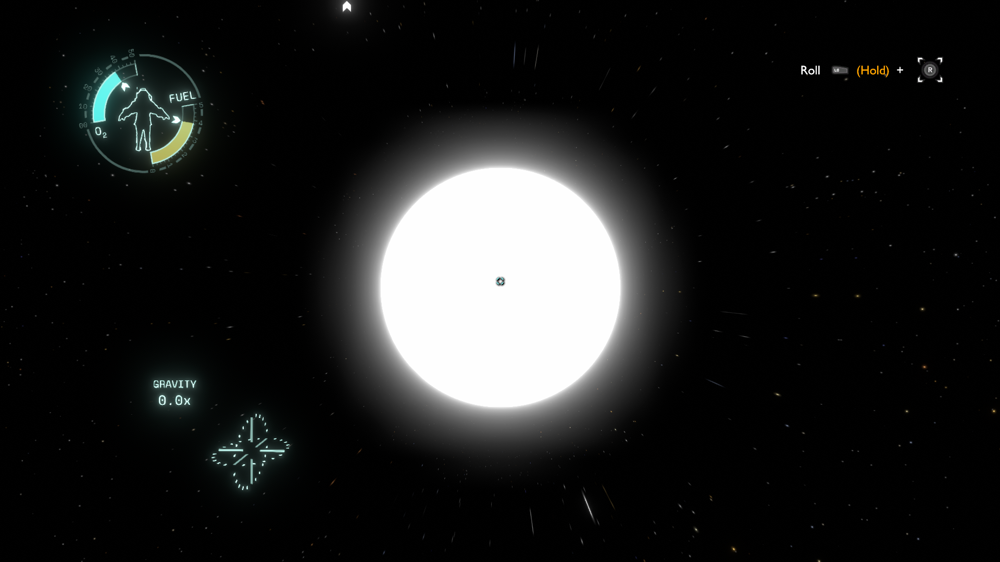

Mysterious Astronomical Phenomena
The Hearthian solar system has a lot of dangers to offer other than the usually violent storms from Giant's Deep. Well, maybe Gabbro doesn't care much about the danger of the storms floating him away, but you and me, we do care about these things, right?
Well, without further ado, let's start with the curious astronomical phenomena closest to us hearthias: the Ghost Matter.
Ghost Matter
- 
- 

Ghost Matter is an extremely hazardous substance found throughout the Solar System. While invisible to the naked eye, it can be detected by the camera or Little Scout. When photographed, it appears as a blue-green aura in the air. It can also be detected by the presence of blueish-silver crystals, as these Ghost Matter Crystals usually indicate the presence of Ghost Matter.
Ghost Matter will injure or kill any living being who lingers within it for more than a brief moment. However it doesn't universally appear wherever there are Ghost Matter Crystals, and some patches of crystal can be crossed safely. Firing the Little Scout through patches of crystal, or taking photographs with the scout's camera can inform the player as to whether a path is safe to cross.
When interacted with, Ghost Matter visibly flares up as it reacts with whatever has contacted it. If the player enters a patch of Ghost Matter, their screen becomes noticeably distorted and becomes a discolored blue-green color. If the player lingers for more than a few seconds, they will very quickly die. The exception is when the Ghost Matter is submerged in water, such as on Giant's Deep when an island is thrown into the sky and passes under the water temporarily when it lands. This shows that Ghost Matter is not dissolved by water, but its hazardous properties are neutralized.
Quantum Shards
- 
- 
Features
Having the appearance of volcanic glass, these irregular shards vary in size and shape, from being held on stands to being large enough to walk on or have small structures on. Each shard will register on the Signalscope and each has 3-4 locations they can be found at once line of sight to them has been broken. Signal from The Quantum Moon will sound the same. They all appear to be standing upright, piercing into the ground.
Location
Museum Shard
The Museum Shard is found in the Observatory on Timber Hearth and primarily serves to demonstrate line of sight keeping a shard in place, once broken the shard will move to another location not in view or "exists in all location simultaneously".
Grove Shard
The Grove Shard is found in a crater on Timber Hearth. Its primary purpose is to demonstrate the scale of the shards and draw ties to the Quantum Moon.
Island Shard
The Island Shard is kept in the Tower of Quantum Trials on Giant's Deep. Upon entering the tower the shard can be seen up to three times. The shard is part of the Quantum Imaging lesson.
Cave Shard
The Cave Shard is located on Ember Twin and an access point to it is mentioned at the northern lake bed of the planet. Once standing on the shard with lights off and no photos, the player will be "quantumly entangled" with the shard and when light is turned back on the location will likely be the cave with no entrances. Traveling on the shard again will bring the player to the other locations. This is the lesson of Quantum Entanglement.
Tower Shard
The Tower Shard is found on the surface of Brittle Hollow next to the Tower of Quantum Knowledge. The writing on the wall on the shard details Nomai curiosity of the shards connection with the Quantum Moon. The shard is tied to the lesson of The Sixth Location.
Black Holes
- 
- 
A black hole is a region of spacetime exhibiting gravity so strong that nothing can escape - not even energy. In real life, Black holes can form through a number of methods, the most common being the collapse of a massive star.
Most of the black holes in Outer Wilds are created by the Nomai. The Black Hole Forge near the natural black hole at the center of Brittle Hollow was where these black holes were created in order to craft warp cores.
A central concept to the game is that of warp travel using black and white holes - with the black holes accepting all matter, and the white holes rejecting them. As a converse of the black holes, nothing can enter a white hole.
White Hole
- 
- 
The White Hole is a gravitational singularity found in the outskirts of the Solar System, linked to the Black Hole at Brittle Hollow's core.
Features
The White Hole is a singularity, and the paired opposite to Brittle Hollow's black hole, from which objects may exit from, but not return through. Objects that fall into Brittle Hollow's black hole disappear and exit from the White Hole. Being the opposite of the black hole, the White Hole's reverse gravity repels any attempts to land on its surface.
There is no atmosphere around the White Hole, and the surroundings are entirely zero-gravity - Objects exiting the White Hole quickly come to rest in a static location around the Hole.
Near the White Hole itself from the beginning of the loop is the White Hole Station, a Nomai-built satellite containing a warp tower, for the purposes of quickly warping back to Brittle Hollow safely should one accidentally fall into the black hole.
While objects falling into the black hole exit at the corresponding location on the White Hole, should the player fall into the black hole, they will always exit facing the White Hole Station, regardless of their entry vector.
Over the course of the loop, bombardment from Hollow's Lantern causes sections of Brittle Hollow's crust, as well as the Lantern's fireballs, to fall into the black hole, exiting through and coming to rest around the White Hole.
This includes fragments containing key structures on Brittle Hollow late into the loop, including the Tower of Quantum Knowledge and Brittle Hollow's Gravity Cannon. The Tower itself is initially inaccessible under Brittle Hollow's gravity, but can be freely traversed in zero-g after falling into the White Hole.
The Nomai Warp Cores are heavily implied to be derived from the Black Hole/White Hole pair, manufactured at the Black Hole Forge. Research held by the Nomai discovered that Black Hole/White Hole pairs exhibit a unique temporal property - objects falling into a Black Hole exit its White Hole slightly before falling in, with the effect becoming more pronounced the more energy put into the system.